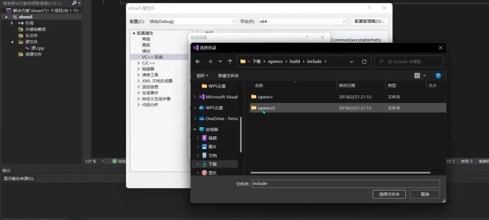
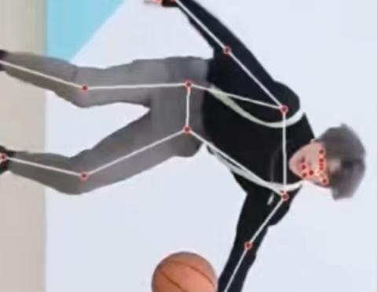
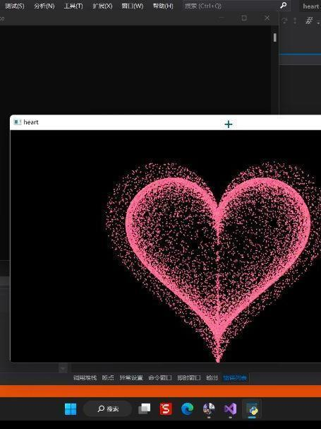
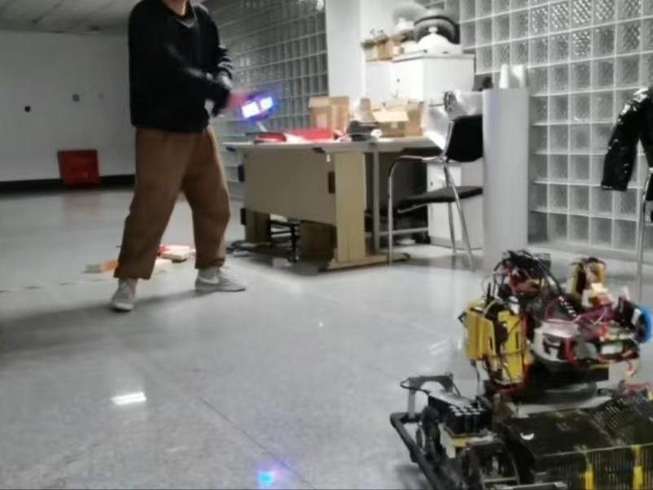
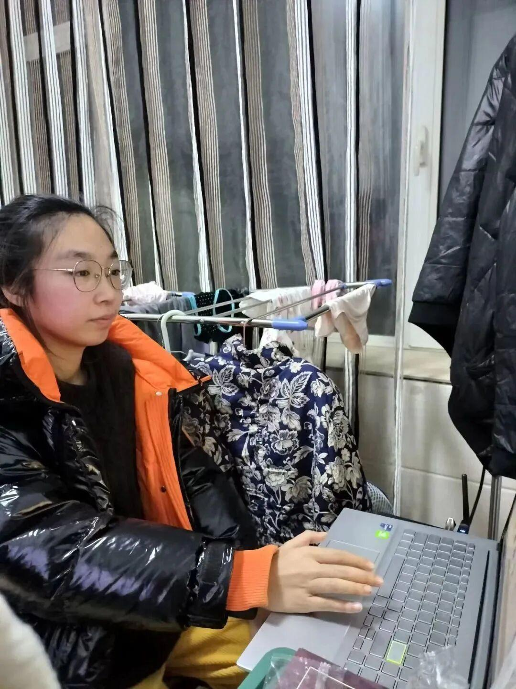

视觉组第一次教学
1 介绍了视觉组的主要工作以及未来教学方向
2 介绍并教学安装视觉组主要的开发工具
3 教学配置Visual Studio的环境

这堪称保姆级别的教学你爱了么
展示作品[Show time]
超有趣，超帅的
展示内容包括但不限于
1 用简单的编程能力写出好玩的程序
2 捕捉面部及肢体动作
3 与自己做的机器人玩耍(我也想)
4 视觉的盛宴



他实在是太知道怎么拿捏我们了
好酷啊，我也想玩
现场采访视觉组组长大大
刚刚入门，一定有很多关于对未来学习的迷茫与困惑吧。没关系，有我们视觉组长大大为我们解答困惑！！！
现在是提问时间

1
提问：刚入门要学习的东西很多，您觉得那个更重要呢？
答：关于软件的了解和对程序的学习都很重要，这些都是最基础的最重要的内容，没有什么重不重要一分。
提问：在您学习的过程中您认为哪方面更难，需要我们更下功夫去学习呢？
答：困难会来自各个方面，在大家进行视觉的学习时，每个方面的不足都会使问题发生，所以在进行视觉学习的时候还是要全面发展。
提问：您觉得视觉在什么方面最吸引你呢？
答：最开始的时候没什么太大的感触，但是在看着别人去做一些项目，还有自己做一些项目，就会觉得十分有趣，也希望大家也能体验这种乐趣。
视觉组组长：耿琬琪
END
排版|勒寒
文字|勒寒
图片|沈理电协
审核|恩嘉